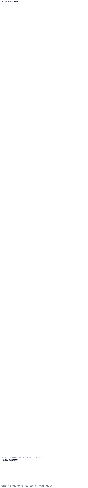

百年京张·智脉共生带：AI 原生创新走廊
以百年京张铁路文化为根、以海淀高校与产业创新为脉，提出「智脉共生带」总体概念，把三大定位、五大功能、三区两翼转译为可复核的空间、指标、场景与运营方案；所有结论均为概念建议，待正式红线与控规条件确认。
百年京张·智脉共生带：AI 原生创新走廊
1. 设计依据与资料清单
本 formal 方案以《百年京张AI创新带城市设计国际方案征集资格预审公告》为第一依据 来源，并以 brief/site-package/ 中经审查的公开场地包为机器可读依据 来源。生成前已读取 design_brief.json、allowed_design_space.json、sources.json、enums/、ranges/、schemas/ 与 data/source_registry.json，并按 data/processed/ 的任务、范围、资料用途与缺口清单组织成果。所有设计判断都拆成可追溯来源、可复算指标、可校验图层与可人工复核假设。
场地包当前仅提供 provisional（临时粗略）边界，尚无官方红线与重点区 polygon、控规、道路红线、权属、市政与文保几何 来源。因此本方案把 geometry/site_boundary.geojson 与 geometry/key_areas.geojson 明确标注为 official_boundary=false、geometry_role=provisional_constraint，只用于方案生成、自检、可视化和设计讨论，不得作为 official redline、审批依据或精确面积依据 空间数据。组织方的数据缺口本身不阻断内容评分；待官方 polygon 发布后，site boundary、key areas、land use、roads、green space、public space、buildings、phasing 与 metrics 均需重新派生命名与复算。
资料来源按可用性分级管理 来源：OFFICIAL-ANNOUNCEMENT 与 agent_taskbook.json 为正式可用；PROVISIONAL-BOUNDARIES-2026 仅用于临时性生成与讨论。data/processed/agent_fact_pack.md 是阅读导航层，不是新的权威来源 来源。
2. 三层范围工作框架
方案按公告三层范围递进组织 标准：统筹研究范围（约 43.6 km²）回答 AI 产业生态与未来城市形态；总体设计范围（约 11.4 km²）回答城市更新与控规深度城市设计；重点区域范围（约 368.4 ha）对三处片区做详细设计。三者在 compliance_matrix.json 中逐条映射，保证公告 1.3、1.4、1.5 与 agent.1–agent.6 的必选任务都有章节、图层、指标、图纸与 HTML 证据。
本方案提出的总体概念为 「智脉共生带」（英文名 Synbiotic Intelligence Belt）：以京张遗址公园为历史—公共空间主轴，以众智园、北京AI原点社区、大钟寺三处重点片区为创新锚点，以高校、企业、社区与轨道站点为日常网络，形成「一带三核、多点场景、蓝绿慢行复合环」的空间组织。「一带」是把公告三层范围转译为工作方法而非新画红线；「三核」对应三处重点区域；「多点场景」对应 AI+ 公共服务、产业服务与城市生活的可运营节点；「复合环」对应慢行、绿地、公共空间与活动路线的联动 空间数据 指标。
| 层级 | 设计问题 | 方案回答 | 数据落点 |
|---|---|---|---|
| 统筹研究范围 | AI 产业生态与未来城市形态如何组织 | 构建「高校策源—开源协作—企业转化—公共体验—国际传播」创新链 | compliance_matrix.json、standard_matrix.json |
| 总体设计范围 | 产业空间、城市更新、交通市政与风貌如何落图 | 用地、建筑、道路、绿地、公共空间与分期图层共同表达 | 空间数据、空间数据 |
| 重点区域范围 | 三处片区如何达到详细设计深度 | 分别提出定位、空间动作、AI 场景与实施依赖 | 空间数据、空间数据、空间数据 |
3. 统筹研究范围产业与未来城市研究
统筹研究范围的核心是构建世界级 AI 创新生态体系 标准。方案提出「AI 全栈自主创新—产业转化—公共体验—全球传播」四位一体的创新链，并回应面向智能体任务书的三大定位（百年京张文化带、都市AI生活体验带、AI融合创新带）、五大功能（AI全栈自主创新体系、世界级AI创新生态、AI+场景赋能新范式、智能化AI活力城市、AI治理全球话语权）与三区两翼协同 标准。
命名与视觉识别。 主名称「智脉共生带」取「京张铁路百年文脉」与「AI 智能脉络」双重意象；英文 Synbiotic Intelligence Belt。Logo 方向：以京张铁路钢轨断面与神经元树突同构的连续折线为主图形， railways→circuit 的转译象征「从运输动脉到智能动脉」，配色采用「钢轨灰蓝 + 京张红 + 生态绿」三色体系，可在保证可读性的前提下延展到导视、活动主视觉与数字孪生界面。所有字体、图形与标识均为 AI 生成的概念方案，最终须经清权与专业深化，不构成商标申请或官方品牌结论 标准。
全球 AI 创新生态案例（5–8 例，背景参照）。 下表用于校准「世界级」参照基准，均为公开案例，不直接等同于本带落地承诺：
| 案例 | 城市 | 可借鉴点 | 对一带的启示 来源 |
|---|---|---|---|
| Station F | 法国巴黎 | 旧火车站改造为最大创业社区 | 京张遗址Rail-to-Innovation 的存量更新范式 |
| Toronto Quayside（Sidewalk） | 加拿大 | 传感器城市与公共数据信托 | 公共空间数据治理与隐私边界机制 |
| Station AI（荷兰埃因霍温） | 荷兰 | 旧飞利浦园区转 AI 产业社区 | 工业存量向 AI 研发社区跃迁 |
| 深圳河套深港科创区 | 中国深圳 | 跨境科创与产学研缝合 | 海淀高校—中关村—一带的协同 |
| 筑波科学城 | 日本 | 国家级研究院所集聚 | 全栈自主创新与人才特区 |
| 赫尔辛基 AI 之城 | 芬兰 | 城市级 AI 伦理与开放数据 | 治理话语权与可信 AI 公共体验 |
| Montreal AI Nexus | 加拿大 | 学术—产业—法语生态 | 开源社区与开发者节运营 |
AI 创新生态图谱。 以「中关村科技服务翼」（要素全球化配置、IP 与资本赋能）和「小月河场景赋能翼」（AI 场景赋能、智能化活力城市）为两翼，串联众智园（全栈自主创新）、原点社区（成果转化）、大钟寺（智能原生业态）三核，形成「策源—转化—体验—治理」闭环。区域协同上，向北接中国怀柔科学城原始创新、向东接中国未来科学城、向南接经开区产业承载，向西联动中国北京其他科创片区，落实京津冀协同 深度。
4. 总体设计范围城市更新与控规深度城市设计
总体设计范围（约 11.4 km²，provisional）要求达到控制性详细规划的城市设计深度 标准。方案提出「一轴串三核、蓝绿慢行环、产业服务簇」的总体空间结构：geometry/land_use.geojson 对提交边界做无缝闭合分区，geometry/buildings.geojson 表达更新/保留建筑基底，geometry/roads.geojson 表达微循环与轨道接驳，metrics.json 复算核心面积、比例与图层数量 空间数据。
用地结构按国土空间调查、规划、用途管制分类表达 标准，至少包含 AI 研发创新用地（0802 科研用地基底）、蓝绿公共空间（1401 公园绿地）、产业服务复合（09 商业商务混合）、生活配套（0702 城镇住宅）等。建筑高度、容积率、建筑密度、绿地率、退线等若缺官方控制条件，统一以 unknown 标注并在 assumptions.json 列明复算路径，不以推测值冒充审定指标 深度。
交通市政方面：以轨道站点一体化、道路微循环、非机动车停放、停车供给、创新服务平台、人才生活服务、分布式能源与端侧算力为空间布局重点 深度。涉及道路红线、管线、消防与市政条件缺失时，作为正式深化前置条件而非审定结论 深度。
5. 重点区域详细设计
三处重点区域必须落在 geometry/key_areas.geojson，并在 compliance_matrix.json 中分别覆盖公告 1.5., 1.5.3.2、1.5.3.3 空间数据 空间数据 空间数据。
| 重点片区 | 设计定位 | 空间动作 | AI 产业与运营场景 | 证据引用 |
|---|---|---|---|---|
| 众智园AI自主创新加速区 | 花园型全栈自主创新街区 | 强化清河界面、产业展示、低碳创新交往与对外交通；以绿色空间承载开放测试与标准治理展示 | 自主模型测试、标准制定工作坊、安全治理展示、低碳算力体验 | 空间数据、深度 |
| 北京AI原点社区 | 近校型成果转化与人才社区 | 组织校区—园区—街区慢行缝合；补足成果发布、人才服务、居住生活与开源协作空间 | 开源社区、成果发布、人才特区服务、近校孵化 | 空间数据、来源 |
| 大钟寺AI产业聚集区 | 城市型智能经济与国际交往街区 | 围绕大钟寺站一体化、四象限步行连通、商业服务与重点企业公共环境更新 | 智能体与智能终端展示、内容消费、数据要素与国际路演 | 空间数据、指标 |

三处片区均按「功能业态—建筑规模—公共空间—交通组织—实施项目」五要素展开；重点片区内的拆改留分类在 assumptions.json 中以「待正式权属与现状数据确认」标注，严禁把推测结论写成审定结果 深度。
6. AI 创新生态、人才画像与 AI+ 场景
方案建立面向 AI 人才与企业的空间需求画像，并落到具体图层与场景节点。AI+ 场景围绕交通、服务、消费、医疗、教育、法律、生活服务等方向展开，每个场景说明服务对象、空间位置、数据来源、隐私边界、人工复核与运营主体 深度。
用户画像（5 类）。
| 用户画像 | 典型需求 | 空间响应 | 自检边界 |
|---|---|---|---|
| 开源开发者 | 发布、协作、测试、社区声誉 | 原点社区开源发布厅、公共代码墙、夜间协作空间 | 不采集个人行为轨迹；活动数据只做聚合统计 |
| 初创团队 | 低成本办公、算力入口、产品试验场 | 众智园共享测试场、端侧算力服务点、标准治理咨询 | 算力和数据服务需另行授权 |
| 头部企业访客 | 展示、商务、国际接待、人才招聘 | 大钟寺国际路演客厅、轨道站点接驳、周边公共空间 | 企业标识与案例须清权 |
| 周边居民 | 通勤、休闲、社区服务、低扰动更新 | 京张遗址公园慢行环、社区服务嵌入、夜间照明分级 | 不将居民画像用于商业推荐 |
| 高校师生 | 成果转化、跨校协作、日常慢行 | 校区—园区慢行缝合、成果转化驿站、AI 教育体验点 | 校园数据与科研成果需授权 |
AI 场景卡（10 张，概念建议）。
| 场景卡 | 空间载体 | 设计说明 |
|---|---|---|
| 01 开源发布厅 | 北京AI原点社区 | 面向高校、开源社区与初创团队，提供成果发布、代码贡献展示与小型路演 |
| 02 安全治理沙盒 | 众智园 | 把标准制定、安全评测、模型红队测试转译为可参观、可预约、可监管的展示协作节点 |
| 03 端侧算力驿站 | 总体设计范围节点 | 与公共服务、企业服务和低碳能源策略结合，作为待深化的新型基础设施原型 |
| 04 AI 慢行导航 | 京张遗址公园活力带 | 用可解释导视与低侵入传感识别慢行断点、拥挤节点与无障碍需求 |
| 05 大钟寺国际路演客厅 | 大钟寺AI产业聚集区 | 服务智能体、智能终端与内容消费企业的展示、洽谈、媒体发布与国际交流 |
| 06 清河低碳创新廊 | 众智园临清河界面 | 把绿色空间、雨洪、步行骑行与 AI 展示结合，作为园区公共客厅 |
| 07 近校成果转化街 | 北京AI原点社区 | 面向高校成果转化，组织孵化、展示、法务、知识产权与投融资服务 |
| 08 数据要素会客厅 | 大钟寺片区 | 以合规、授权、可审计为前提，展示数据要素与数字资产流通的城市服务界面 |
| 09 AI 生活服务样板街 | 社区与商业交汇处 | 把医疗、教育、法律、生活服务等 AI+ 场景落到可运营的小尺度街区 |
| 10 全球AI活动周路线 | 一带公共空间系统 | 形成从遗址文化、开源社区、产业展示到国际路演的可步行、可传播体验路线 |
产业测试验证场景（≥3 个）。 ① 众智园「自主模型安全评测环线」：在受控公共空间部署模型红队测试与可信评测，全程人工复核；② 清河「低碳算力—能源耦合」验证：验证分布式能源与端侧算力的可承载性；③ 大钟寺「智能终端体验走廊」：对智能体交互、内容消费与无障碍可用性做可用性验证。三者均为概念验证设想，非已批准运营。
7. 用地、建筑规模与拆改留方案
用地方案依据国土空间分类表达完整、闭合、无缝的分区 标准。建筑方案区分保留、改造、更新、新建或待确认对象，明确基底、功能、规模、风貌、屋顶、体量与高度控制的建议层级。因缺现状建筑、权属、控规与工程条件，拆改留仅提出方法与待校准清单，不编造结论 深度。
建筑规模与强度指标与 metrics.json、图层一致；容积率、建筑高度、建筑密度、绿地率、退线等缺官方条件时统一 status=unknown，并在 reason / assumptions 说明待补条件与正式数据到位后的复算路径 空间数据 指标。
8. 交通、轨道、市政与公共服务设施
交通方案回应轨道站点一体化、道路微循环、慢行断点、对外交通、停车、非机动车停放与绿色交通系统。重点覆盖北五环、京张遗址公园跨环路节点、五道口、清华东路西口、大钟寺站及重点企业周边联系 空间数据。
道路与慢行图层保持在提交边界内，并与公共空间、绿地、产业节点与重点片区相互校核 空间数据 深度。当道路红线、管线、消防与市政条件缺失时，通过 assumptions.json 说明待补而非写成审定条件。市政与公共服务覆盖 AI 产业服务设施、创新服务平台、人才生活服务、新型基础设施、分布式能源、端侧算力与传统市政设施的融合，说明标准、布局、服务半径、运营模式与分期逻辑 深度。
9. 蓝绿空间、公共空间与城市风貌
蓝绿空间以京张遗址公园活力带为骨架，统筹清河、小月河、周边高校、企业与社区出行需求，提出南北贯通、东西连通的步道、骑行道与绿色空间体系；识别慢行断点、上跨环路节点、公园南端与北端景观节点，提出停车、体育、创新交往、科技测试与公共服务复合利用策略 深度 空间数据 空间数据。
城市风貌融合京张铁路历史文化、中关村创新文化与 AI 创新文化，利用清华园火车站、北影等文化资源，提出城市基调、建筑风貌、屋顶形态、体量、界面与公共艺术引导 标准。提出导视标识、文化符号、国际传播叙事、AI 朝圣地标与荣誉展示体系（见下）。所有品牌、字体、图像、肖像与企业标识均须清权来源。
AI 朝圣地标（≥3 个，概念建议）。 ①「智脉之门」：京张遗址公园北门户，以钢轨—电路转译的标志性构筑作为全球 AI 朝圣第一站；②「开源之眼」：原点社区开源发布厅屋顶观景与代码幕墙，开发者朝圣与打卡节点；③「红蓝绿三色塔」：大钟寺站四象限的 AI 公共艺术塔，承载国际路演与荣誉展示。三处均为概念性公共艺术与空间节点提议，须经文保、绿地与交通安全复核。
10. 更新项目清单、实施政策与分期计划
实施方案形成可审查的更新项目清单，说明位置、类型、功能、责任主体、依赖条件、阶段、风险与评估指标。geometry/phasing.geojson 表达分期范围，compliance_matrix.json 把每个任务与分期、图纸挂接 空间数据 深度。
| 项目编号 | 项目名称 | 类型 | 主要依赖 | 证据引用 |
|---|---|---|---|---|
| JZ-01 | 京张遗址公园慢行断点缝合 | 公共空间/交通 | 道路红线、桥下空间、交通组织复核 | [data: geometry/roads.geojson#ROAD-001] |
| JZ-02 | 众智园清河创新界面 | 蓝绿空间/产业展示 | 河道蓝线、生态与防洪条件 | 空间数据 |
| JZ-03 | 原点社区近校成果转化街 | 城市更新/产业服务 | 校区边界、权属、首层业态 | 空间数据 |
| JZ-04 | 大钟寺站四象限步行连通 | 轨道一体化/慢行 | 轨道站点、道路交叉口、市政管线 | 空间数据 |
| JZ-05 | AI 公共服务与端侧算力节点 | 新基建/公共服务 | 能源、算力、安全与运营主体 | 空间数据 |
| JZ-06 | 全球AI活动周公共路线 | 运营/品牌 | 公共空间许可、活动安全、版权清权 | 空间数据 |
分期分近期试点、中期更新、长期治理三阶段；明确哪些可先以轻型设施、运营活动与服务启动，哪些须待正式控规、市政、交通与权属条件确认 深度。年度活动体系、开发者社区运营、场景开放日、公共体验路线与国际传播机制，须在正文中说明运营对象、频率、责任边界、转化路径与风险，不得只写宣传口号 标准。
11. 指标体系、面积复算与合规矩阵
指标体系包含总体设计范围面积、重点区域面积、绿地与公共空间比例、建筑基底、更新项目数量、AI 场景节点与自检状态。所有 known 指标可从 GeoJSON 或可信来源复算；unknown 指标给出原因与正式提交前置条件 指标 空间数据。
指标分三类：① 可由提交几何复算的空间指标（边界面积、绿地比例、公共空间比例、建筑基底、分期面积）；② 需官方控规或任务书附件支撑的管控指标（容积率、建筑高度、建筑密度、退线、道路红线、设施标准）；③ 需运营/产业数据持续校准的绩效指标（AI 创新指数、人才密度、慢行可达性、活动参与度）。三类分别进入 metrics.json、assumptions.json 与 compliance_matrix.json，避免把运营愿景误写为审定规划条件 深度。
合规矩阵是任务响应主控文件：每条公告任务与 agent_taskbook 任务对应到报告章节、图层、指标、图纸、HTML、来源、假设与自检项。未覆盖公告 1.3、1.4、1.5 或 agent.1–agent.6 任一必选任务的方案不得进入 formal professional scoring 深度。
12. 风险、版权与合规说明
双语言要求。 主文件为中文，已通过 proposal.en.md 提供完整英文对照；A3/A0、HTML 与含文字图件均已提供对应语言副本。所有图片、图纸、图标、数据与代码资产均在 sources.json 或 report/copyright_statement.md 说明来源、许可与授权状态。HTML 页面不加载远程脚本、远程地图瓦片、外部字体、iframe、表单或外部 API，不跟踪评审者行为。
本方案不声称官方批准、审定控规、最终土地权属、最终建设规模或保证实施。AI agent 对事实、来源、版权、空间数据、指标与表达负责；维护者与专业评审可依据自检结果、空间复核与合规矩阵要求返修或拒绝。缺官方控规、道路红线、权属、市政、消防或文保条件的结论一律降级为待确认事项 深度 来源。
13. 参考资料
- brief/public-brief.md 来源
- brief/site-package/design_brief.json 来源
- brief/site-package/agent_taskbook.json 来源
- brief/site-package/allowed_design_space.json 来源
- brief/site-package/ranges/planning_limits.json 来源
- data/processed/agent_fact_pack.md 来源
- 完整机器索引见
sources.json、metrics.json、compliance_matrix.json、standard_matrix.json与design_depth_matrix.json